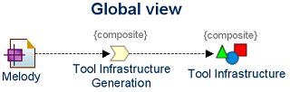
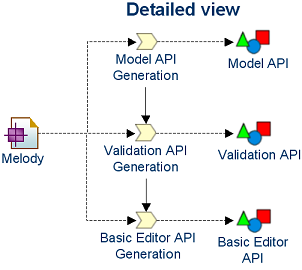

Activity: Defining production process
Purpose
The purpose of this activity is to:
- Define each process of the production process.
- Purpose and interests (e.g., added value, improvements).
- Process breakdown (processes decomposition).
- Process relationships.
- Actors, activities, asset transformation.
- Activity relationships (activity chaining and asset consumed and produced).
- Check the process is internally and externally valid (consistent, complete).
- Check the general production process is valid.
- Check the architecture principles are respected.
The interest to define processes and their activities is to:
- Clarify the transformation process realized by the production process.
- Identifiy processes and activities needing generation or manually realized.
- Foreshadow the need or usage of factory components.
This activity is led in parallel of the asset definition activity.
Inputs
Inputs of this activity are:
- Processes and activities already defined.
- Behavioral architecture through processes and activities.
- Assets of the production process.
Outputs
Outputs of this activity are:
- New or updated processes and activities.
- Behavioral architecture.
Work Guidelines
Process and activity description and their relationships must:
- Classify processes (e.g., for code, framework, tool, language production).
- Conduct gathering / breakdown / refactoring of processes and activities.
- Check process consistency.
- Give an optimal processes.
- Clarify or improve behavioral architecture of the production process.
- Clarify activities that will become factory components.
- Identify reusable / specific processes and activities.
Copyright (c) 2008 Thales / EPM. All Rights Reserved.
Illustration
Figures below presents examples of representation of processes and activities. It is advisable to reuse a common language (e.g., UML Activity, BPMN).

Figure 1. Example of global view of process
In this example, a tool infrastructure is generated from a domain model, named Melody.

Figure 2. Example of detailed view of process
This figure shows how the general process is detailed. The "Tool Infrastructure Generation" activity is broken down into three activities "Model API Generation", "Validation API Generation", and "Basic Editor API Generation".

Figure 3. Example of complete process
This figure shows a complete process with actors, an activity chain, and inputs/outputs of assets.